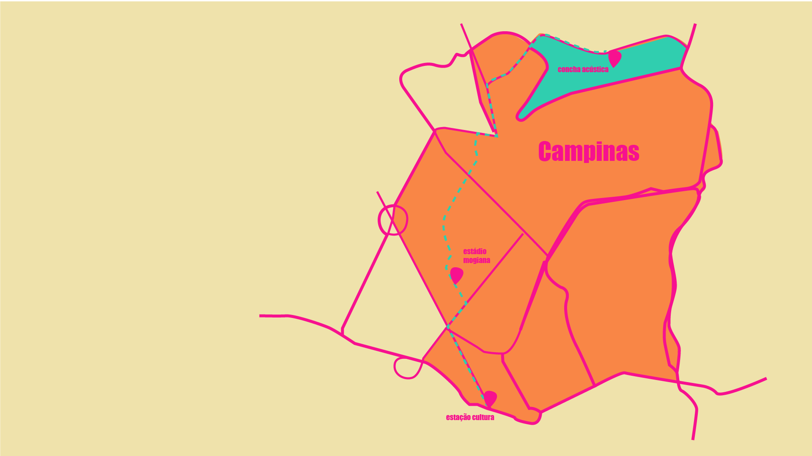
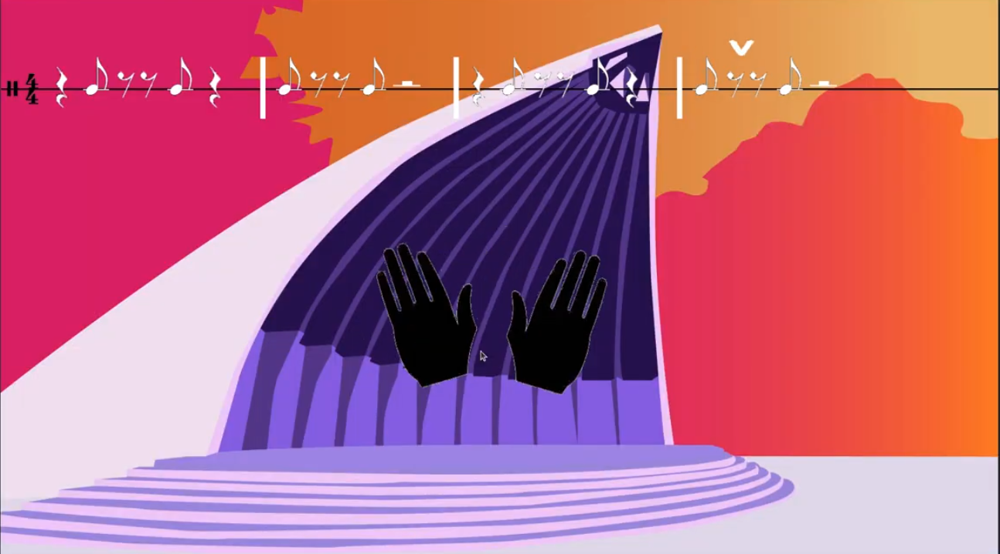
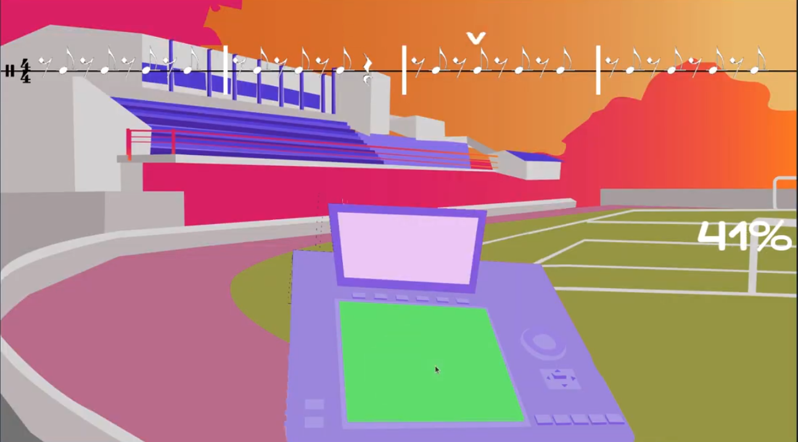

12/07 (domingo) - Sala dos Toninhos - Estação Cultura
09/08 (domingo) - Concha Acústica
10/08 (segunda-feira) - Espaço Cultural Maria Monteiro
11/08 (terça-feira) - Espaço Cultural Maria Monteiro
Ana Batucada é um jogo educativo de bateria e percussão para os seguintes sistemas operacionais: Android (celular), Mac, Linux e Windows, com classificação livre. Nele, acompanhamos a relação entre a neta, Ana Batucada, e a avó, Mestra Batera, enquanto aprendemos técnicas de percussão e bateria, de maneira lúdica. A história se passa em um futuro próximo, em Nova Campinas, após o Grande Blecaute de 2100, em que toda a computação humana foi perdida. Poucas pessoas ainda sabem fazer música, Mestra Batera é uma delas e seu objetivo é transformar a neta, a rebelde Ana Batucada, em uma percussionista afro-brasileira, para que a música ainda exista no futuro.

Nova Campinas, 2100.
Após o Grande Blecaute, quando todos os servidores, computadores e celulares foram desligados e a internet extinta, poucas pessoas ainda sabiam fazer música.
Mestra Batera é uma delas e seu objetivo é transformar a neta, a rebelde Ana Batucada, em uma percussionista afro-brasileira, para que a música ainda exista no futuro.
O jogo tem 3 cenários: Estação Cultura, Estádio Cerecamp Mogiana e Concha Acústica. Em cada um desses lugares, Mestra Batera passa exercícios para você se preparar até poder tocar as músicas de cada cenário, em diferentes ritmos como: samba, funk e trap.

